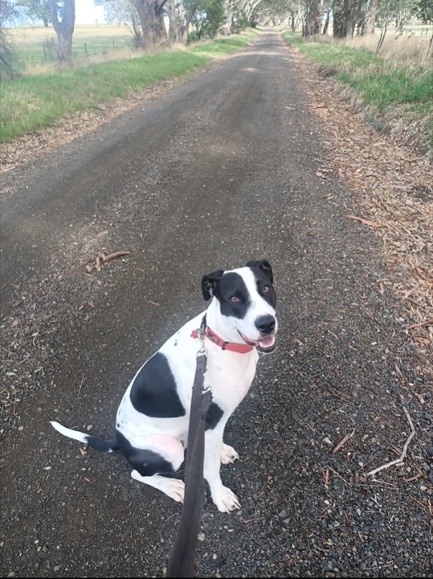
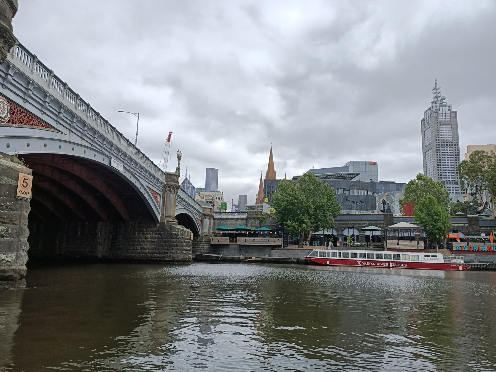
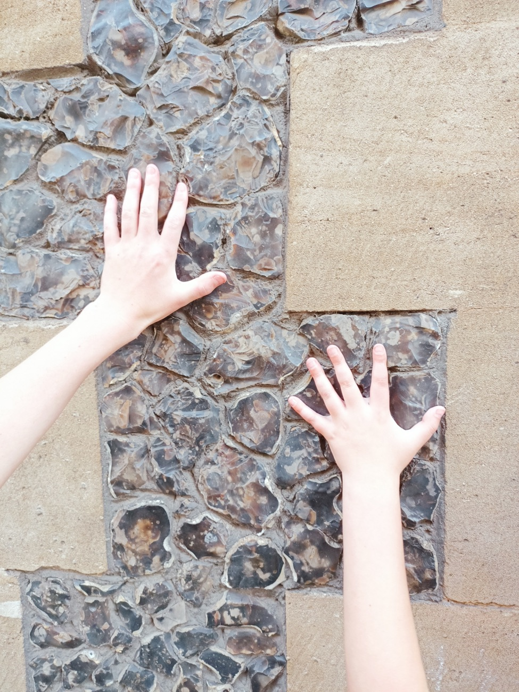
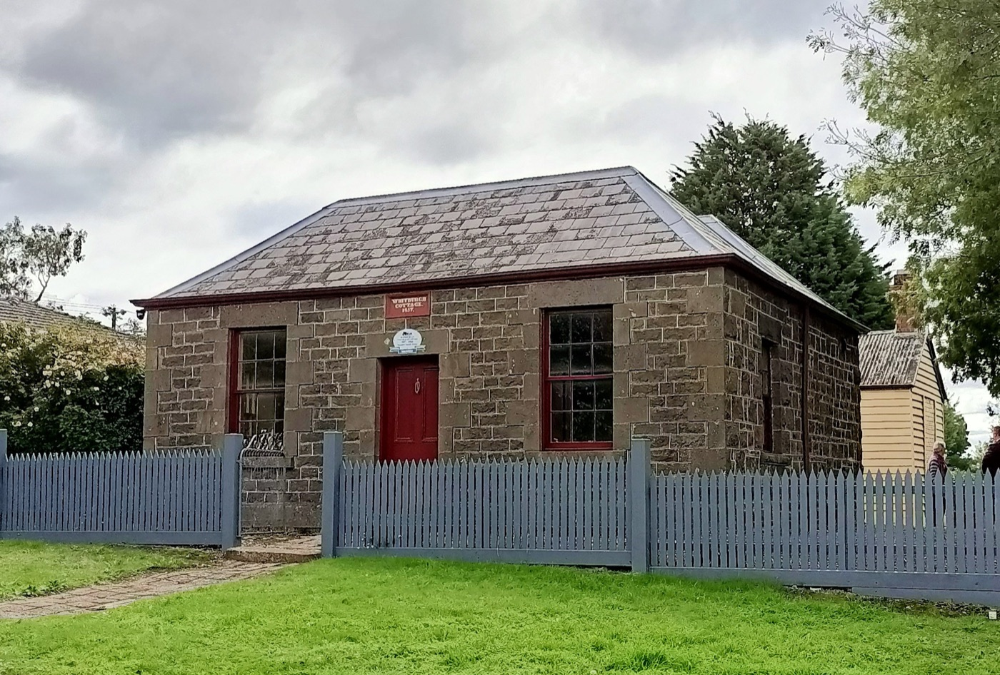
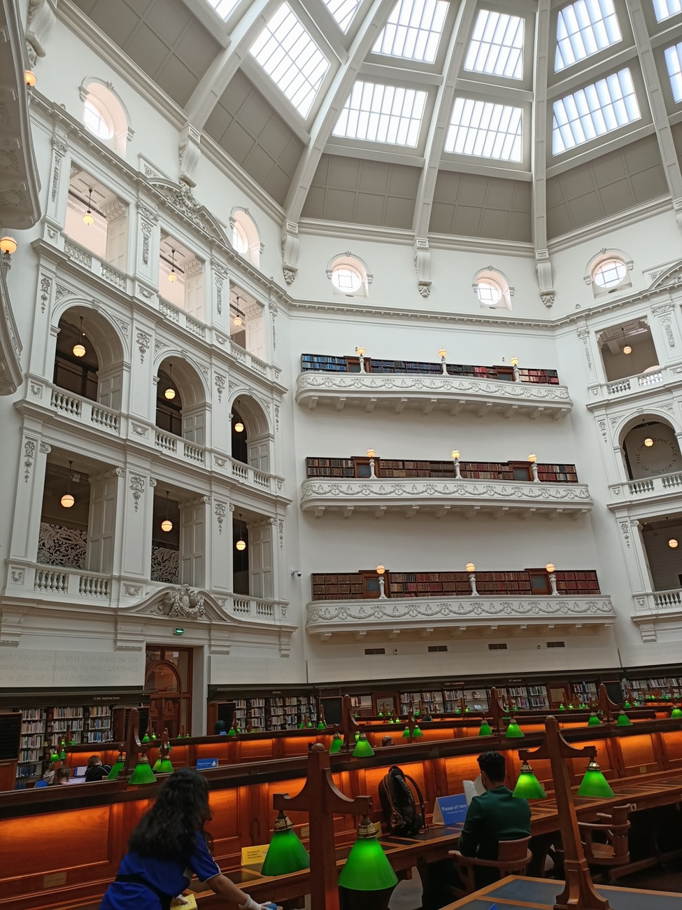
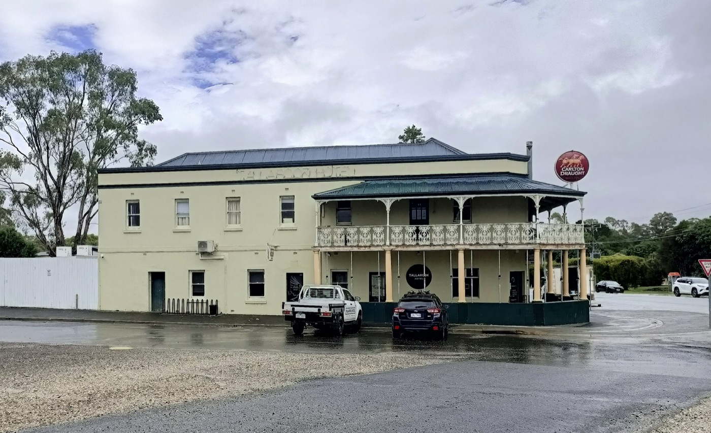

Jo Guard Heritage helps owners, decision-makers and communities understand, protect and make sensitive changes to Victoria's heritage places — combining decades of experience with practical, plain-English advice.
"Heritage places aren't frozen in time — they can usually sustain change, and that's what I can help with."
Bringing historic buildings back to life, or making the most of them through sensitive change, is an exciting journey — but finding your way through complex heritage planning laws can feel overwhelming. Whether you're altering or repairing a treasured landmark, or designing a modern development next to a heritage place, every choice affects the history around it.
That's where a heritage consultant comes in. As a specialist in historic architecture and planning legislation, I can help unlock your site's potential — understanding a building's past, context and true significance to build a robust, persuasive case for the changes you want to make.
For over 30 years I've worked to preserve and enhance some of Victoria's most important historic places, while helping them continue to meet the needs of modern owners. I can slot into your existing design team or work as a standalone service — together, we can turn your vision from an idea into an enduring reality.
Simplifying complex rules for historic places.
Achievable solutions for challenging contexts.
Sustainable results and long-term maintenance plans.
Jo Guard is a heritage consultant based in Victoria, with a career spanning local and state government heritage practice in Australia and the United Kingdom. After many years managing heritage development, policy and decisions from within government, she founded Jo Guard Heritage in 2023 to provide independent, client-focused advice.
Jo brings a rare, inside understanding of how the heritage system actually works — from the detail of permits and repairs through to strategic policy and the workings of statutory decision-making. She has worked across all areas of Heritage Victoria, culminating as Heritage Operations Manager, been the long-standing Heritage Adviser to Mitchell Shire Council, and served two terms as a member of the Heritage Council of Victoria.
That background means clients get advice that is both technically rigorous and genuinely pragmatic — grounded in what decision-makers look for, and focused on getting good outcomes for significant places.


Clear, practical guidance to help you navigate heritage controls — from early feasibility conversations to detailed development proposals for complex or contested sites, and everything in between.
Support with heritage permit and planning permit applications — advice on what decision-makers require and how to present a proposal for the best chance of a positive outcome.
Assessment of cultural heritage significance and preparation of statements of significance — the foundation for sound heritage decisions, listings and management.
Trusted heritage adviser support for councils, drawing on years of hands-on experience with planning referrals, policy, grants and day-to-day heritage matters.
Independent review, peer review and strategic input on heritage listings, policy and studies — informed by experience on both sides of the statutory process.

Not sure which you need? A short initial conversation is the best place to start — get in touch and Jo will point you in the right direction.
"Working with Jo over the past two years has made the heritage planning process much easier. Her fees are fair and reasonable, her turnaround times are consistently quick, and she is always easy to work with. She took the stress out of the process by providing clear advice, practical guidance and prompt responses whenever I had questions. I would highly recommend Jo to anyone looking for knowledgeable, reliable and responsive heritage planning assistance."
"Jo had an important role as a peer reviewer for documentation to support a complex heritage amendment at the City of Whittlesea. We valued the level of professionalism and enthusiasm Jo brought to the job, her interactions with staff, and her commitment to deliver the final products on time and on budget."
"When we asked for a meeting with Council's Heritage Adviser, we expected a faceless bureaucrat with little local knowledge. Instead we got Jo, who provided clear, knowledgeable and empathetic advice in plain English, which gave us the direction we needed."
Independent heritage consultancy providing advice to owners, councils and other decision-makers, and communities across Victoria.
Nearly nine years advising a Victorian council on heritage matters, planning referrals and policy.
Sat on Permit and Assessment Appeal Hearing panels, and the Communications, Finance, and Heritage Policy & Practice Committees. Passionate about sustainability, Jo was part of the steering group that delivered the Heritage Council's guidance on Heritage and Climate Change — the first of its kind in Australia.
Beginning with what was meant to be a one-year exchange as a permits officer, Jo worked across the organisation, ending her time there as Heritage Operations Manager.



Whether you're planning works to a heritage property, need a heritage impact statement, or want advice on maintenance and repairs, Jo would be glad to hear from you. Email or message is the best way to reach her.
Acknowledgement of Country I acknowledge the Taungurung People as the Traditional Owners and Custodians of the land and waters on which I live and work. I pay my respects to their Elders past and present, and extend that respect to all First Nations peoples. Sovereignty was never ceded.